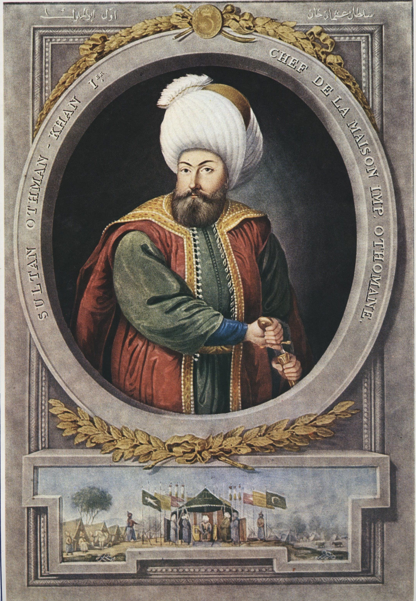
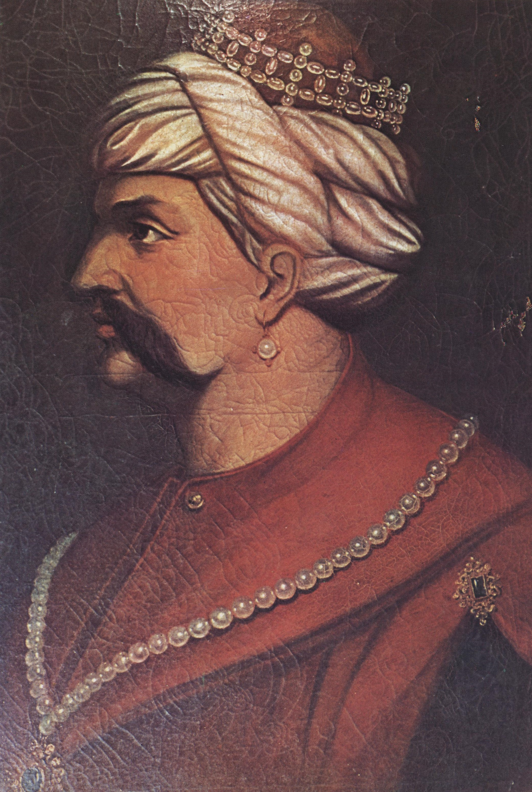
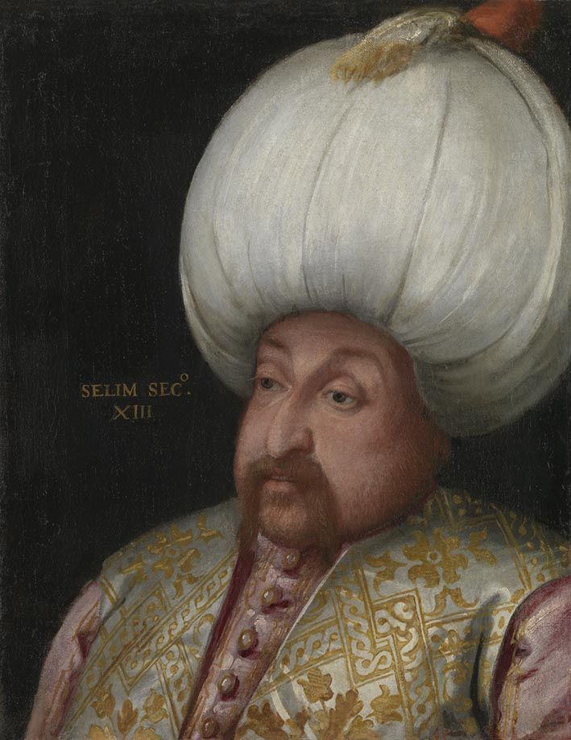
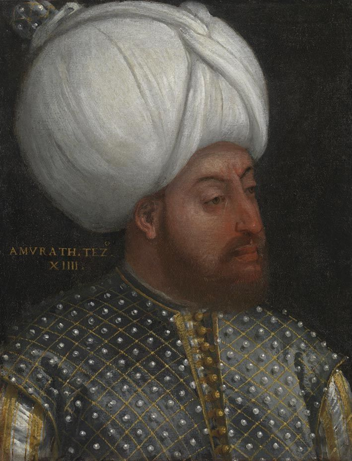
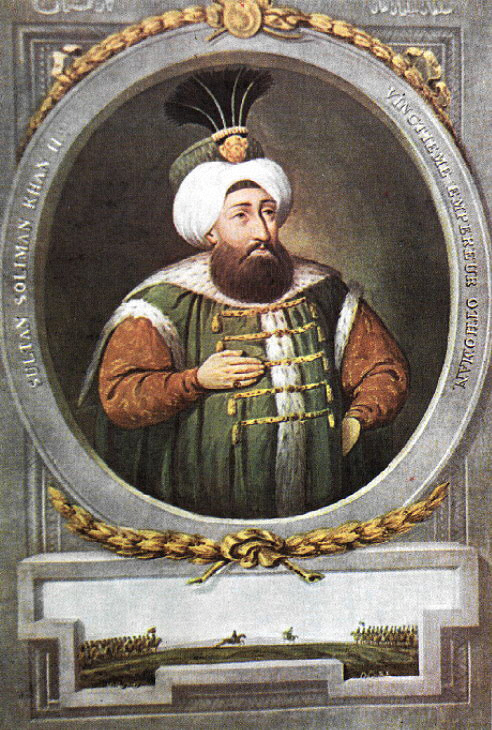
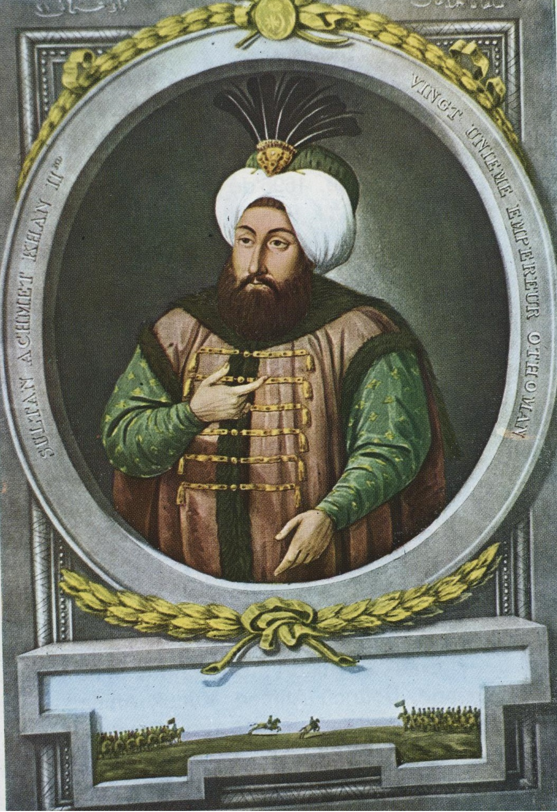
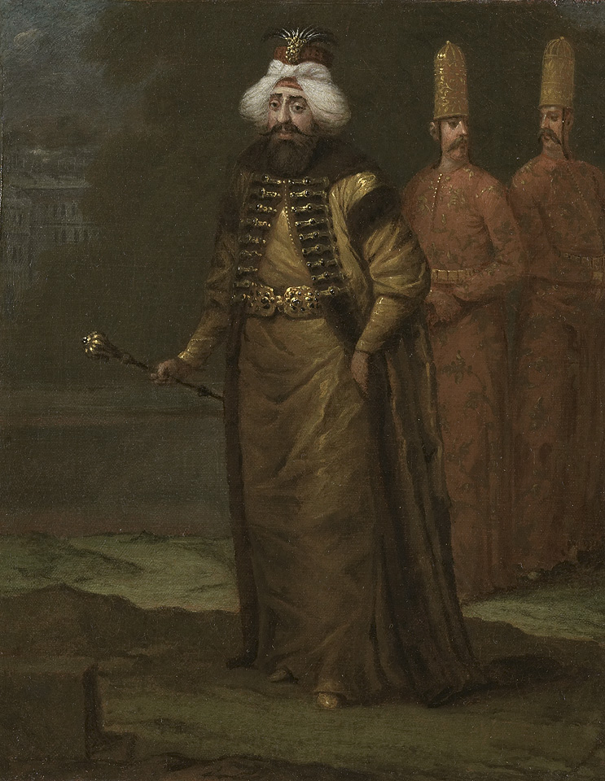

Osman Gazi (1299 – 1326) |

Orhan Gazi (1326 – 1359) |

I. Murad (1359 – 1389) |

Yıldırım Bayezid (1389 – 1402) |

Fetret Devri (1402-1413) |

Mehmed Çelebi(1413 – 1421) |

II. Murad (1421 – 1451) |

Fatih Sultan Mehmed (1451 – 1481) |

II. Bayezid (1481 – 1512) |

Yavuz Sultan Selim (1512 – 1520) |

Kanunî Sultan Süleyman (1520 – 1566) |

II. Selim (1566 – 1574) |

III. Murad (1574 – 1595) |

III. Mehmed (1595 – 1603) |

I. Ahmed (1603 – 1617) |

I. Mustafa (1617 – 1618 / 1622 – 1623) |

Genç Osman (1618 – 1622) |

IV. Murad (1623 – 1640) |

I. İbrahim (1640 – 1648) |

IV. Mehmed (1648 – 1687) |

II. Süleyman (1687 – 1691) |

II. Ahmed (1691 – 1695) |

II. Mustafa (1695 – 1703) |

III. Ahmed (1703 – 1730) |

I. Mahmud (1730 – 1754) |

III. Osman (1754 – 1757) |

III. Mustafa (1757 – 1774) |

I. Abdülhamid (1774 – 1789) |

III. Selim (1789 – 1807) |

IV. Mustafa (1807 – 1808) |

II. Mahmud (1808 – 1839) |

Abdülmecid (1839 – 1861) |

Abdülaziz (1861 – 1876) |

V. Murad (30 Mayıs 1876 – 31 Ağustos 1876) |

II. Abdülhamid (1876 – 1909) |

Mehmed Reşad (1909 – 1918) |

Mehmed Vahdeddin (1918 – 1922) |
 |
|